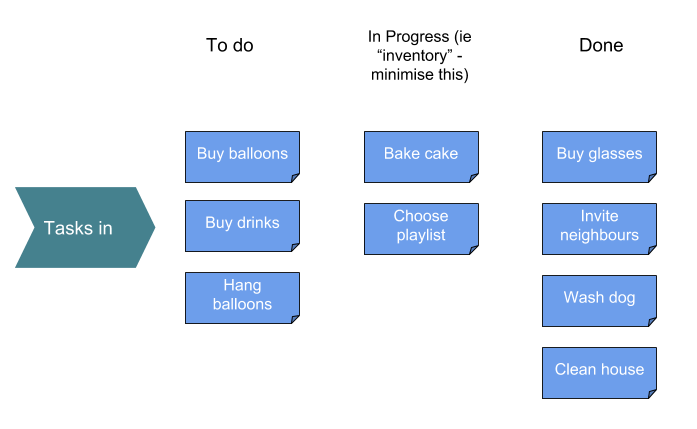

I once wrote a book. It consumed five years of discipline and hard work, before I gave up and self-published. It's quite a mediocre piece of writing which gets better towards the end, because I was literally learning to write as I went. I could have written fifty short stories during that time, or a thousand poems.
Now I mostly work on small projects which can be finished in less than a month. I often build and publish mobile apps in less than a day. Some of these apps have been downloaded more times in an hour than that book has in five years.
But the cover illustration is great, thanks Paul Bowers.
One pattern which I use all the time in my work is "Kanban". It's derived from the manufacturing processes of Toyota, and formalised by Taiichi Ohno. It takes its Japanese name from the tags which are used to track the movement and production of parts in factories. However, these ideas have moved off the factory floor and pervaded software development and business management.
One of the problems solved by Kanban is excess inventory. When building something, say a car, you need to have a supply of nuts, bolts, door handles, and spark plugs. This is your inventory. A large inventory is fundamentally a liability: a pile of door handles is expensive, will rust, takes up space, and can become obsolete. Door handles only become useful when they are part of a car which is being driven out of the show room. One of the major problems of manufacturing is to reduce this sort of costly inventory as much as possible, and Kanban is a simple methodology to do that.
The concept of inventory can also apply to more insubstantial things. You have inventory everywhere in your life: half-finished creative projects, forgotten vegetables rotting in your fridge, things on your to-do list, ideas which you haven't acted upon, new product features which are struggling to make it to your customers.
The key points which I have taken from Kanban for running a small freelance business, and getting things done in general, are:
In practical terms, this could mean:

Here's a modified Kanban board for planning a party, to show one of the virtues of minimising inventory. If, at this stage, I suddenly had to stop preparing for some reason, then at least I will have a clean dog and house, and the guests can drink water in new glasses. If I had not minimised inventory and had too much in "in progress" when the party started, I might have had a wet dog running around, balloons bought for no reason, have guests drinking out of the tap instead of glasses, and have wet floors everywhere.
Customers want to know that you can deliver a finished product that works, and they want it as soon as possible. If you show a lot of half-finished hobby projects, that will make a worse impression than showing nothing at all.
It's better from a business perspective to showcase a fart app that's already finished, in the store, and making a few dollars in advertising; rather than a technically brilliant, ambitious, buggy, incomplete work in progress. Your project might be the best idea ever, but it's no use to the world and not making any money while it's sitting in pieces on your hard drive or workbench.
Professionals listen, create a plan, deliver things almost right on the first try and perfect on the second, collect the money, and move onto the next project.
Dilettantes are those who do things for fun, without commitment. Their work is mostly inventory, because a useful, finished result is not the objective. The difference between a pro and a dilettante, is that a pro is looking to minimise inventory and maximise output.
One of the great things about getting older is that I'm mostly working with professionals, even on my "spare time" projects. They just get things done. Anyone who couldn't, has already dropped out of the entrepreneurial world in their twenties and is working a day job somewhere. All the musicians who never turned up to rehearsals, the artists with piles of incomplete canvases but no finished works, the programmers who got bored part-way through their projects and moved onto something else, and big talkers and dreamers who couldn't back it up with actions, got weeded out.
Inventory is easy to spot: a large to-do list, useless incomplete parts piled up, a constipated business process with lots of things going in one end, and nothing coming out the other. If there are things lying around unfinished, break them up into mini-tasks if needed, and get them done.
Ironically, this blog post has been gathering dust on my computer for years, partially finished. If this post has been at all useful to you, apologies for the couple of wasted years where it might have already been of some help. You might also want to like or share it, or write to me if you have any thoughts on it.
Needless to say, this blog isn't financial or legal advice, an excuse for getting fired, or promising that any of these ideas will work for you. I really, really, hope that you don't think it is investment advice. The companies or people I mention may not agree with my opinions here. Don't do anything reckless, damaging or hurtful to anyone! In the future you might need your bridges unburnt. (c)2014-2018 James Hudson